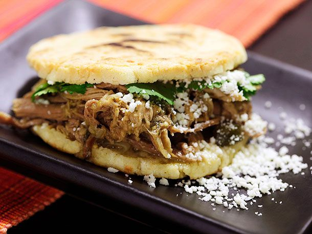

Arepas

Description
Arepas are cornmeal cakes that originated hundreds of years ago in a region that now makes up Colombia, Venezuela, and Panama.
Traditionally, they were cooked on a pan called a budare. But they can also be grilled, baked,
or fried. Venezuelan arepas tend to be smaller and thicker, while Colombian arepas tend to
be sweeter, thinner, and stuffed with cheese. This version more closely resembles Venezuelan arepas.
Ingredients:
- Harina Pan (Arepa Mix)
- Water
- Salt
- Butter
- Queso Blanco
- Your choice of protein
Steps:
- Add the Harina PAN and the salt into the mixing bowl and mix together using your hands.
- Then, little by little add the water and knead and mix the dough using your hands. You must knead the dough until the mix is soft, firm and has a uniform consistency without any grains.
- Once the dough is ready you let it sit for 5 minutes.
- Now you are ready to form the arepas. You should grab a handful of the dough, and with both hands make a nice sized ball of about 2” to 2.5” in diameter. Then you use one hand to hold the ball and the other to flatten it ever so slightly with your fingers, turning it around so you flatten it evenly.
The thickness is really up to you and up to the type of arepa you are going to prepare.
- This is probably the most common way to cook an arepa. I believe the translation would be something like roasted or grilled Arepas. The best way to do this is with what we call a “BUDARE”, which is basically a cast iron round griddle.
You would first sear them at a higher temperature and then cook the inside at a medium temperature flipping them over constantly.
- You want to eat these right after cooking as they tend to harden up after several hours. If you have leftovers you can just microwave them to soften/heat them up again.
- Cut them in half and fill them with Queso Blanco (white cheese) and spread some butter on each side inside the arepa
- You can also fill them with different meats and sauces, I like to make a shredded chicken but you can use beef or even sandwich meat.